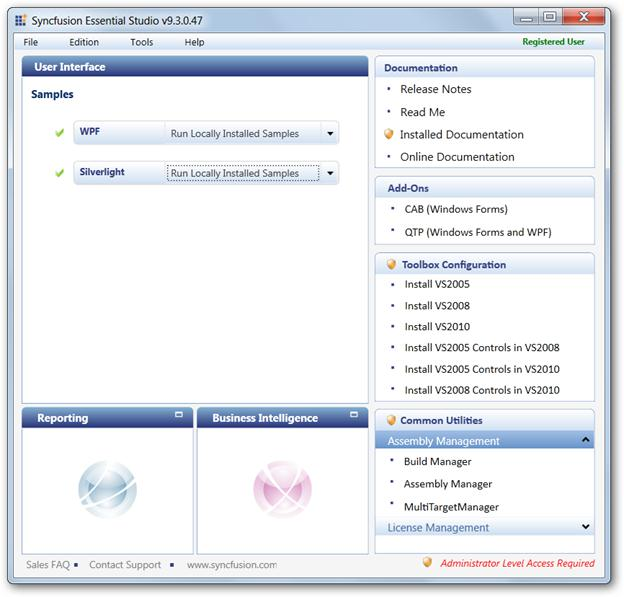
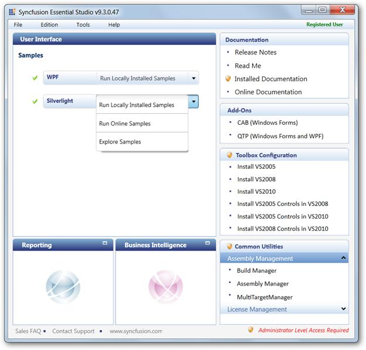
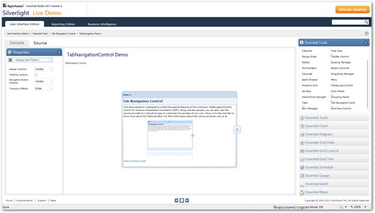

To view samples:
1. Click Start-->All Programs-->Syncfusion-->Essential Studio <version number> -->Dashboard.
The Essential Studio Enterprise Edition window is displayed.

Figure 833: Essential Studio Dashboard
The User Interface edition panel is displayed by default.
2. Select Silverlight from the samples listed. The following options will be displayed. You can view the samples in the following three ways:
· Run Locally Installed Samples-View the locally installed Tools samples for Silverlight using the sample browser
· Run Online Samples-View the online samples for Silverlight
· Explore Samples-Locate the Silverlight samples on the disk

Figure 834: Essential Studio Dashboard Displaying Optionsfor Viewing Samples
3. Click Run Locally Installed Samples. The Silverlight Sample Browser displays.
4. Go to Tab Navigation ->Tab Navigation Demo.

Figure 835: Silverlight Tab Navigation Control Demo